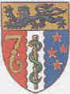

THE CIRCUMCISION REFERENCE LIBRARY
| THE NEW
ZEALAND MEDICAL JOURNAL Vol 116 No 1181 ISSN 1175 8716 |
 |
Effects of male circumcision on female arousal and orgasmWhile vaginal dryness is considered an indicator for female sexual arousal disorder,1,2 male circumcision may exacerbate female vaginal dryness during intercourse.3 O'Hara and O'Hara reported that women who had experienced coitus with both intact and circumcised men preferred intact partners by a ratio of 8.6 to one.4 Most women (85.5%) in that survey reported that they were more likely to experience orgasm with a genitally intact partner: `They [surveyed women] were also more likely to report that vaginal secretions lessened as coitus progressed with their circumcised partners (16.75, 6.88–40.77).' 4 Presence of the movable foreskin makes a difference in foreplay, being more arousing to the female.4 Women reported they were about twice as likely to experience orgasm if the male partner had a foreskin.4 The impact of male circumcision on vaginal dryness during coitus required further investigation. We conducted a survey of 35 female sexual partners aged 18 to 69 years who had experienced sexual intercourse with both circumcised and genitally intact men. Participants completed a 35-item sexual awareness survey. Women reported they were significantly more likely to have experienced vaginal dryness during intercourse with circumcised than with genitally intact men c 2 (df = 1, n = 20) = 5.0, p <0.05.5 Women who preferred a circumcised male sexual partner averaged 27.3 years of age (SD = 8.2), while those whose stated preference was for a genitally intact partner had a mean age of 36.4 years (SD = 13.7). Thus, the role of the male foreskin in preventing loss of vaginal lubrication during intercourse may become more discernible with increasing age among women. We reported: `During intercourse, the skin of an intact penis slides up and down the shaft, stimulating the glans and the nerves of the inner and outer foreskin. On the outstroke, the glans is partially or completely engulfed by the foreskin with more skin remaining inside the vagina than is the case with the circumcised penis. This `valve' mechanism is thought to retain the natural lubrication provided by the female because the bunched up skin acts to block the lubrication escaping from the vagina, which results in dryness.'5 Our work, which supports the hypothesis of Warren and Bigelow3 and the findings of O'Hara and O'Hara 4 about the role of the male prepuce during coitus is fully reported in Denniston et al.5 Research generally has not considered possible adverse effects of male circumcision upon female sexual arousal and response. While Moynihan reported that vibratory thresholds, blood flow and hormone levels were studied,1 there was no mention of circumcision status of the male partner. Likewise, Leiblum failed to control for male circumcision status.2 In light of published findings,4,5 this is a serious methodological omission. Most likely, reported vaginal dryness and the related clinical designation `female arousal disorder' is but a normal female response to coitus with a man with an iatrogenically deficient penis.5 It is imperative that future studies of female arousal disorder record and control the circumcision status of male sexual partners. Gillian A Bensley
CIRP note: This document may also be found at: http://www.nzma.org.nz/journal/116-1181/595/ |
|
http://www.cirp.org/library/sex_function/bensley1/